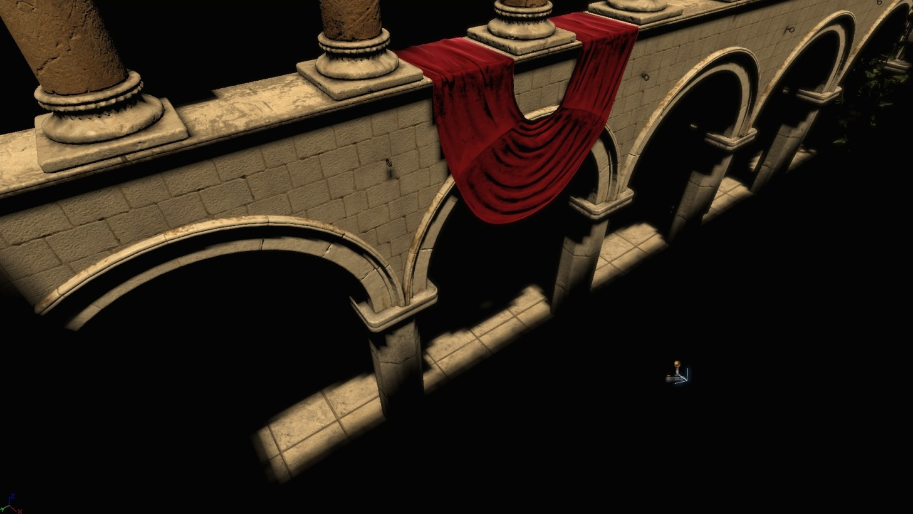
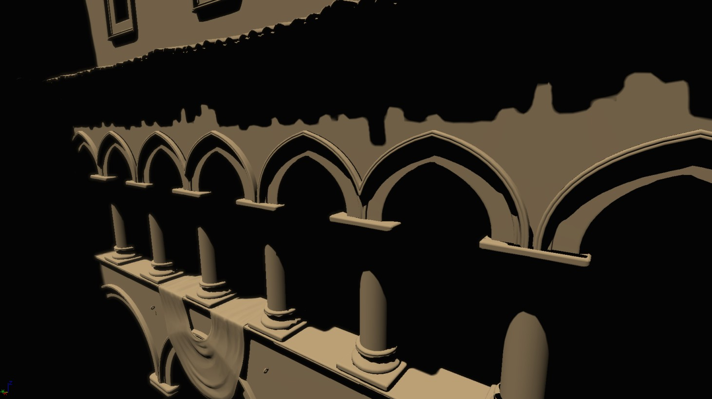

UDN
Search public documentation:
DistanceFieldShadowsKR
English Translation
日本語訳
中国翻译
Interested in the Unreal Engine?
Visit the Unreal Technology site.
Looking for jobs and company info?
Check out the Epic games site.
Questions about support via UDN?
Contact the UDN Staff
日本語訳
中国翻译
Interested in the Unreal Engine?
Visit the Unreal Technology site.
Looking for jobs and company info?
Check out the Epic games site.
Questions about support via UDN?
Contact the UDN Staff
UE3 홈 > 빛과 그림자 > 디스턴스 필드 섀도우 (Distance Field Shadow)
UE3 홈 > 라이팅 아티스트 > 디스턴스 필드 섀도우 (Distance Field Shadow)
UE3 홈 > 라이팅 아티스트 > 디스턴스 필드 섀도우 (Distance Field Shadow)
디스턴스 필드 섀도우 (Distance Field Shadow)
문서 변경내역: Daniel Wright 작성. 홍성진 번역.
개요
작동 방식
제한사항
비교 1
 위의 디스턴스 필드 섀도우와 같은 해상도의 섀도우 팩터를 사용한 그림자. 다른 토글가능 라이트가 사용하는 방식으로, 텍셀당 1 바이트 입니다:
위의 디스턴스 필드 섀도우와 같은 해상도의 섀도우 팩터를 사용한 그림자. 다른 토글가능 라이트가 사용하는 방식으로, 텍셀당 1 바이트 입니다:

더 높은 해상도의 섀도우 팩터를 사용한 그림자로, 디스턴스 필드 섀도우와 같은 품질을 내기 위해 트윅한 것입니다. 해상도는 각 축별로 2~4배 늘어났으며, 최종 라이트맵 메모리는 텍셀당 2 바이트 디스턴스 필드 버전보다 3.7 배 늘어났습니다:
비교 2

위의 디스턴스 필드 섀도우와 같은 해상도의 섀도우 팩터 섀도우: 디스턴스 필드 섀도우와 같은 품질을 내기 위해 해상도를 높인 섀도우 팩터 섀도우:
디스턴스 필드 섀도우와 같은 품질을 내기 위해 해상도를 높인 섀도우 팩터 섀도우: